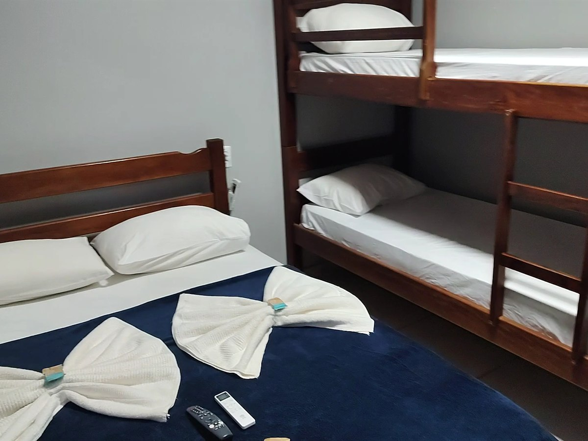
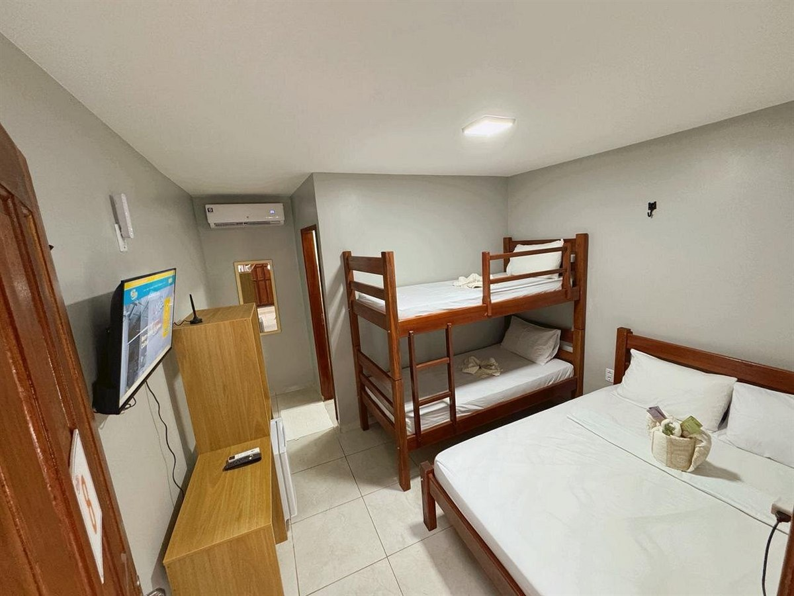
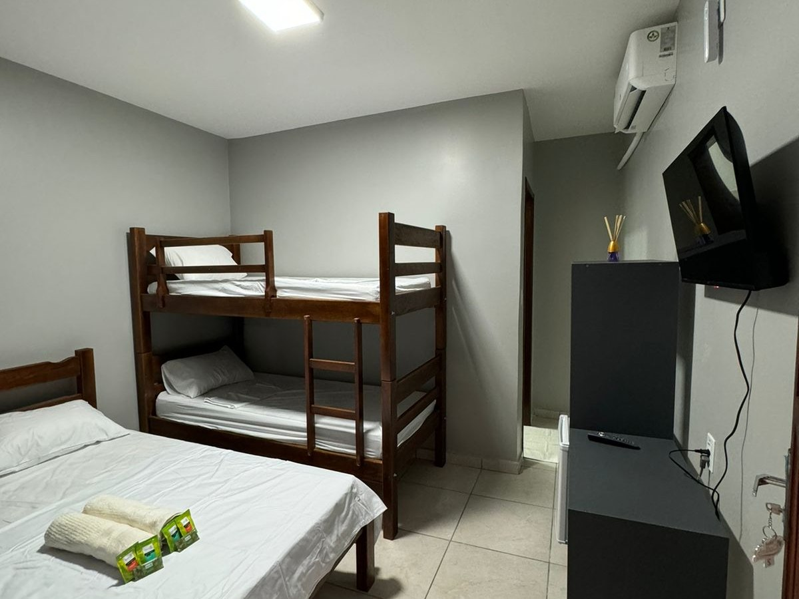
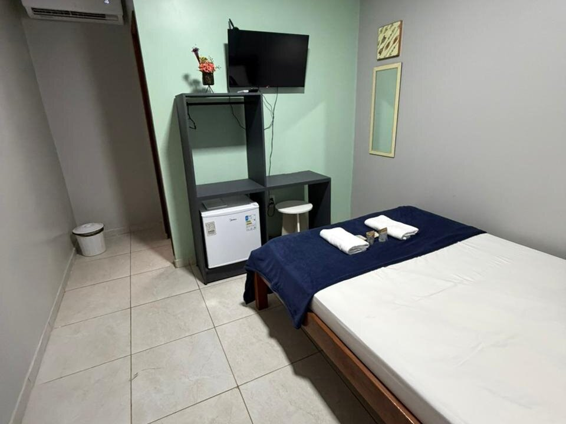
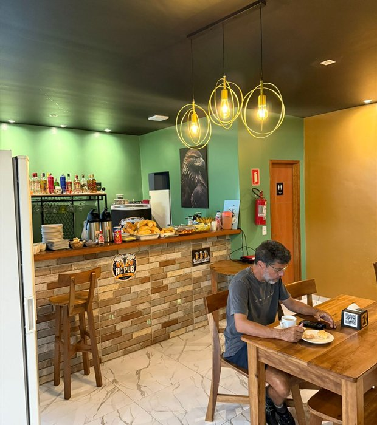
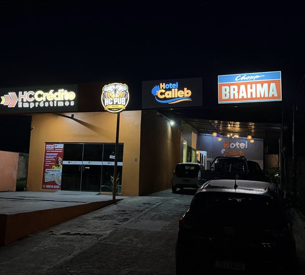
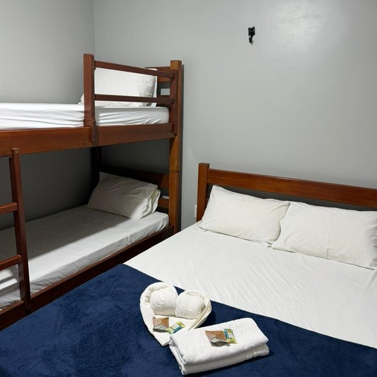
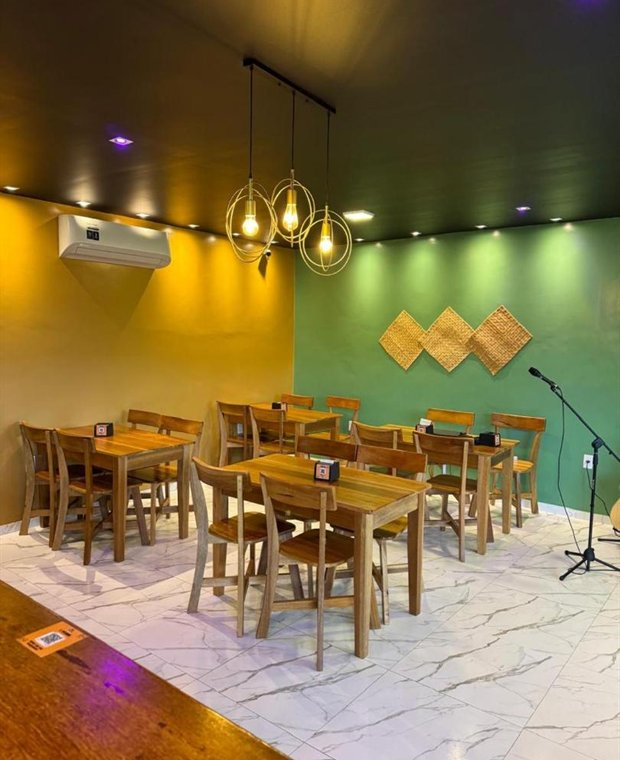

Presidente Figueiredo
Conforto e Hospitalidade no Coração da Amazônia.
Sua melhor escolha em Presidente Figueiredo, com café da manhã incluso e localização privilegiada no centro da cidade.
Consultar disponibilidade
Acomodações
Conforto e descanso em cada detalhe.
Todos os nossos quartos contam com ar-condicionado silencioso, enxoval premium e café da manhã incluso.



Sua experiência
Uma estadia pensada para descansar, explorar e voltar renovado.
-
Café da manhã inclusoCafé regional todas as manhãs
-
Wi-fi de alta velocidadeEm todas as áreas do hotel
-
Ar-condicionado nos quartosSilencioso, com enxoval cuidado
-
Atendimento regionalPersonalizado, pela equipe da casa
-
Localização privilegiadaNo centro de Presidente Figueiredo
-
Reserva simplesDireto com a equipe pelo WhatsApp




10+
Anos de experiência
A nossa essência
A elegância do Hotel Calleb no portão de entrada para a selva.
O Hotel Calleb nasceu do desejo de oferecer uma experiência superior em Presidente Figueiredo. Combinamos a rusticidade da floresta com a sofisticação de um hotel premium, proporcionando aos nossos hóspedes o refúgio perfeito após um dia explorando as majestosas cachoeiras da região.
- Localização estratégica no centro de Presidente Figueiredo
- Atendimento personalizado e regional
- Conexão wi-fi de alta velocidade em todas as áreas
- Quartos equipados com o que há de mais moderno
Explore o Destino
Descubra a Terra das Cachoeiras.
Presidente Figueiredo esconde segredos milenares. O Hotel Calleb é sua base estratégica para vivenciar o melhor do turismo amazônico.
Cachoeira da Iracema
Rodovia BR-174, km 998 · a 8 km do centro
Cachoeira da Pedra Furada
Rodovia AM-240, km 57
Cachoeira das Lajes
Rodovia BR-174, km 113
Caverna Refúgio do Maroaga
Rodovia AM-240 (estrada de Balbina), km 6
Pronto para viver essa experiência?
Faça sua reserva e venha descobrir tudo o que Presidente Figueiredo tem de melhor.
Galeria
Cada detalhe importa
Localização
Estaremos no coração de Presidente Figueiredo.
Uma base estratégica para curtir as cachoeiras, a natureza e o conforto de um hotel pensado para relaxar e explorar a Amazônia.
Localizado no centro de Presidente Figueiredo, com fácil acesso às principais trilhas, cachoeiras e atrações da região.
Depoimentos
O que nossos hóspedes dizem
Avaliações publicadas no Booking por quem se hospedou.
“Equipe maravilhosa, super aconchegante, tudo funcionou nós conformes e superou nossa expectativa. Parabéns!”
“Funcionários educados e atenciosos, além do ambiente ser organizado e limpinho. No hotel funciona uma choperia e sushi. Muito bom por sinal!”
“Hotel maravilhoso, funcionários atenciosos, tudo perfeito, concerteza irei voltar.”
“Localização, atendimento, bar com sushi a noite no hotel!”
Reserve sua estadia
Reserve sua estadia premium hoje.
Preencha os dados e entraremos em contato via WhatsApp para confirmar sua reserva com as melhores tarifas.
Confirmação instantânea
Suporte humanizado via WhatsApp
Políticas flexíveis
Cancelamento grátis até 24h antes
Reserva Inteligente
2.500+
Hóspedes felizes
15+
Cachoeiras próximas
100%
Hospitalidade regional
Premium
Segurança e conforto